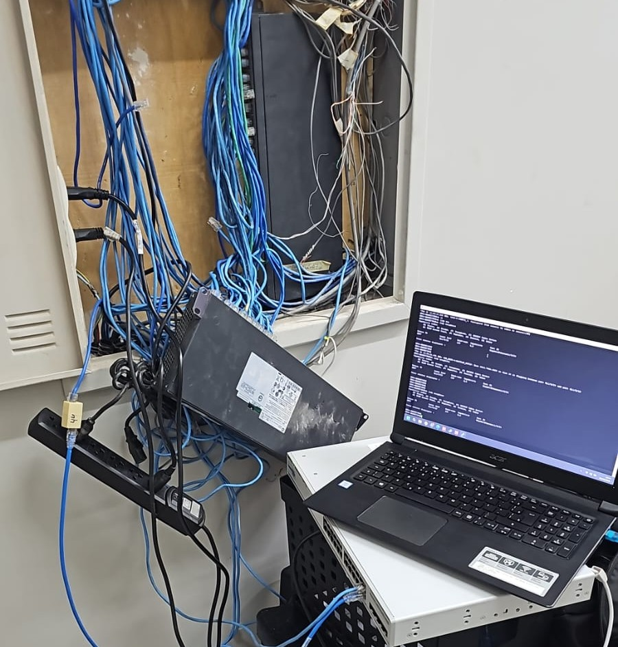
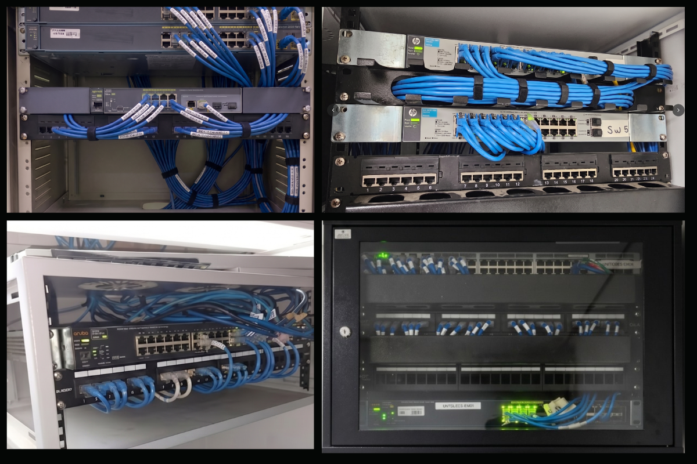

🧩
Contexto
Ambiente com equipamentos fora de padrão, cabeamento desorganizado, pontos de rede distribuídos em locais inadequados e necessidade de maior controle técnico.
Reestruturação da infraestrutura tecnológica da unidade UniToledo Wyden, com foco em organização de redes, cabeamento estruturado, higienização de cabos antigos, repassagem de novos pontos Cat6, padronização de estações, domínio, GPO e melhoria do ambiente corporativo.
O objetivo foi melhorar a organização da TI, o controle do ambiente tecnológico e a padronização da infraestrutura conforme o modelo corporativo adotado pela YDUQS.
Ambiente com equipamentos fora de padrão, cabeamento desorganizado, pontos de rede distribuídos em locais inadequados e necessidade de maior controle técnico.
Atuação em redes, switches, racks, cabeamento Cat6, organização física do ambiente, eliminação de cascatas, Wi-Fi corporativo e revisão de pontos críticos.
Padronização de computadores, ingresso em domínio corporativo/acadêmico e aplicação de políticas de controle por Active Directory e GPO.
Mapeamento do ambiente, identificação de equipamentos legados, hubs, switches fora de padrão, pontos de rede críticos e necessidade de reorganização física.
Remoção de cabos antigos ou sem uso, reorganização dos caminhos físicos e repassagem de cabeamento Cat6 para melhorar a estrutura e reduzir riscos operacionais.
Instalação e adequação de racks, movimentação de pontos para locais apropriados, organização dos switches, eliminação de cascatas e uso de patch panels/organizadores para melhorar manutenção e identificação.
Ingresso de máquinas em domínio, aplicação de políticas via GPO, adequação de SSIDs e melhoria no padrão de autenticação e controle do ambiente.
Conferência dos pontos, validação dos acessos, apoio aos usuários e registro técnico das alterações realizadas para facilitar futuras manutenções.
Clique em uma imagem para abrir a pré-visualização.

Ambiente com cabeamento desorganizado, equipamentos em locais inadequados e dificuldade de manutenção.

Ambiente estruturado, com melhor identificação, melhor manutenção e maior padronização técnica.


O projeto evidencia experiência prática em infraestrutura, redes corporativas, suporte técnico, organização física de ambiente e padronização operacional.
Melhoria na identificação dos pontos, redução de cabos sem uso, organização de racks e menor complexidade visual para manutenção.
Maior controle sobre estações, usuários, políticas, acessos e padronização do ambiente por meio de domínio e GPO.
Ambiente mais preparado para manutenção, expansão, documentação e operação diária, com menor dependência de improvisos e topologia mais enxuta após a redução de 5 switches.
Esta página apresenta uma visão resumida e técnica da integração. Para complementar com prova social e publicação profissional, acesse também o post do LinkedIn.